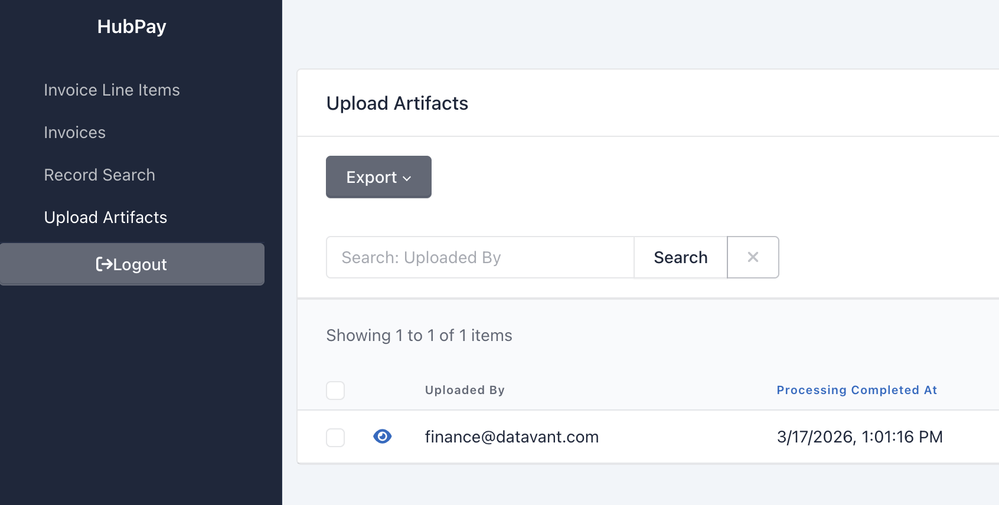
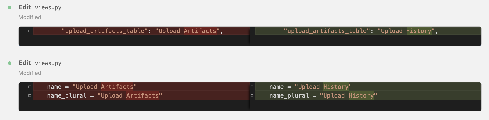
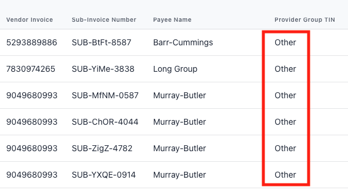

Stop Nagging Your Engineer
How PMs can ship the small stuff themselves — and free engineers for the work that actually matters.
The ticket that's been in the backlog for three sprints
You know the one. A stakeholder wants a label changed, a column added, a field reordered. One point. Maybe 20 minutes of work. And it just... sits there, because "rename a button" never beats "ship the thing that unblocks three clients."
Stakeholders ask. PMs shrug - "It's in the backlog". Engineers apologize. Nobody's wrong — there's just limited capacity and a very long list.
Now, instead of nagging my engineer, I just nag Claude. Claude never has anything more important to work on.
Here's how.
30 seconds on me and HubPay
I'm a PM at Datavant. I worked on HubPay, the Finance UI for non-embedded medical records retrieval — paying providers and vendors — invoices, approvals, the whole paper trail.
We were replacing a legacy system as part of our transition to Switchboard from ChartFinder.
We had a small engineering team of 1 - 2 at any given time but no shortage of stakeholder requests.
Know the house rules before you move in
Have a quick conversation with your EM before you touch anything.
- Repository access — make sure you can clone the repo and have the right permissions
- Branch naming conventions — know how your team names branches
- PR process — approvals, automated tests, who reviews
- What's in bounds — agree on what types of changes are PM-safe
It's their house. You're a guest with a key.
The Rename
Our stakeholder told us they were confused by the label "Upload Artifacts" — they had no idea what an artifact was. We agreed to rename it to "Upload History."
One point. Maybe 15 minutes of engineering time. Had been sitting in the backlog for a few sprints.
Before

The conversation
•
finance/views.py line 1108 — the column label (table header)•
finance/views.py line 1971 — the nav sidebar name•
finance/views.py line 1972 — the nav sidebar plural name•
admin/views.py line 972 — "Invoice Upload Artifacts" in the general admin siteThe admin one is a different view for a different audience — worth leaving that alone unless the ask specifically includes it.

name and name_plural are set to "Upload History". The plural form is identical to the singular. Fine if intentional, but wanted to flag it in case the stakeholder expected "Upload Histories" or similar.http://localhost:29719/finance/invoice/list and click into any invoice — you should see "Upload History" in the sidebar, as the section heading, and as the column header.After
Total time: ~20 minutes. Zero engineer involvement.
A few things I learned
Before you say yes...scope it with Claude
A stakeholder asked: "Can you add the wave number to HubPay?" Sounds like a simple field. I asked Claude to scope it first.
Wave number doesn't exist anywhere in Hub — not on any model, not in any event schema, not in any API response. So this isn't a display change; the data isn't here yet.
Hub receives retrieval target data from Switchboard via DEDA events. Let me check what fields those events currently carry. (checks event payload schema)
Wave number isn't in the payload Hub receives from Switchboard. To show it in HubPay, you'd need:
1. Switchboard to include wave number in the DEDA event it sends to Hub — that's a change on their side
2. Hub to capture and store it — a new field on the model plus a migration, which is engineering work
3. Then display it in the Finance UI — that part you could do yourself, but only after 1 and 2 are done
Steps 1 and 2 require coordination with the Switchboard team. Worth flagging with your EM before this goes anywhere.
In 5 minutes I had confirmation it wasn't a quick PM fix, a clear explanation of why, and the right framing to reset expectations with the stakeholder. The output wasn't code — it was a better ticket and a smarter conversation.
Ask what else it touches
A ticket to "add the provider TIN to invoice line items" scoped fine. The data existed, I just had to show it. I implemented it, tested it, and saw this:

Most records showed "Other" instead of a real TIN. I had no idea why. I asked Claude.
Found it. There's a
provider_group_tin property on the model, but it's written to only return the actual TIN for one specific retrieval method (HIH_MAJOR). For everything else, it returns the string "Other". That's why most of your rows look wrong.
Safer approach: instead of changing the existing property, I can add a separate one just for the Finance UI that always returns the real TIN. That way Finance gets what it needs and the other view stays untouched. I'll add a comment explaining why they're separate so no one "fixes" it later.
I didn't know there were two views using the same property. I didn't know the HIH admin was a separate stakeholder context. Without Claude, I would have shipped a broken fix or spent an hour digging through unfamiliar code. Instead it was a 5-minute conversation — and now, before I touch anything, I ask: what else does this touch?
Some changes are simple. Learn to spot them — then go for it.
✓ Go for it
- Copy and text changes
- Adding columns with existing data
- Reordering or restyling existing UI elements
📞 Phone a friend
- Database or data model changes
- Impacts multiple systems or teams
- Eventing and APIs
Between Claude, local tests, and engineer review, there are a lot of checkpoints before anything reaches prod. Try the change. Something has to go very wrong for bad code to get there.
You don't need to become an engineer.
You just need to know when to call one
The small stuff no longer has to wait
Renaming a label, adding a column, reordering fields — these used to need precious engineering hours. Now they need you, Claude, and an hour (give or take).
Use it to go further, not just faster
The PMs who get the most out of this aren't the ones who use it to go faster. They're the ones who use it to go further — asking better questions, scoping tickets more accurately, and shipping the small things so their engineers can focus on the hard ones.
Every PR still needs an engineer's eyes
One thing to keep in mind: every PR still needs an engineer's eyes. The goal isn't to flood the review queue — it's to make sure what lands there is worth their time.
Claude holds the knowledge — you hold the context
And one more: while setting up this demo, I hit an error Claude had solved before — but couldn't recognize, because the memory captured the fix without capturing when to apply it. One nudge from me — "didn't we have a workaround for this?" — and it found the answer immediately.